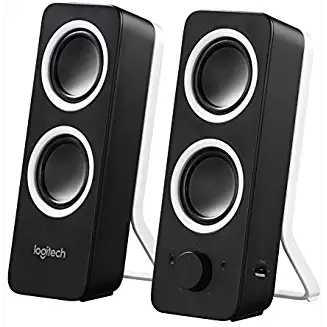

What we sell
This is what a shopping website would look like WITH our plug-in in the top right corner
Sort By:
No Result Found. Try Other Filter Settings.


Logitech Multimedia Speakers
$22.99

JBL Flip 4
$74.95

Logitech 2313
$34.50
Anker Soundscore Bluetooth Speaker
$99.99

Oont Angle 3
$21.99

Polk Audio T15
$59.00

Bose Companion 2
$99.00